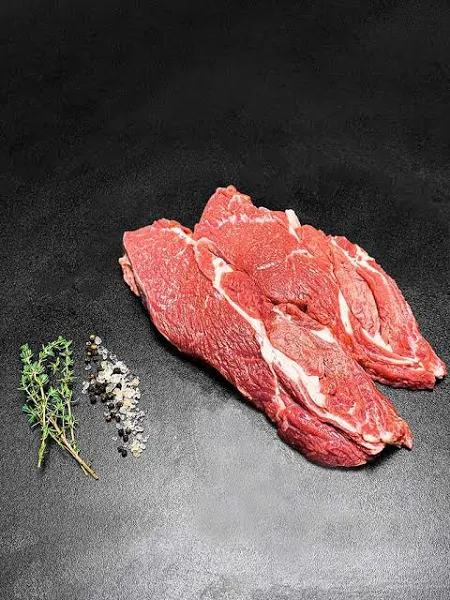
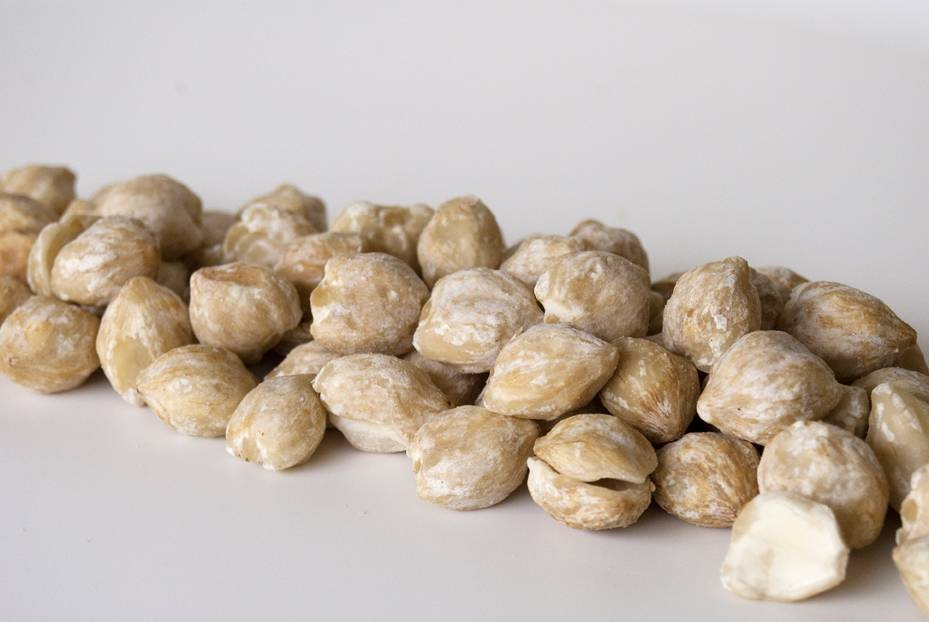
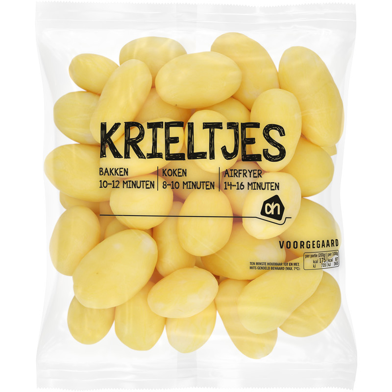
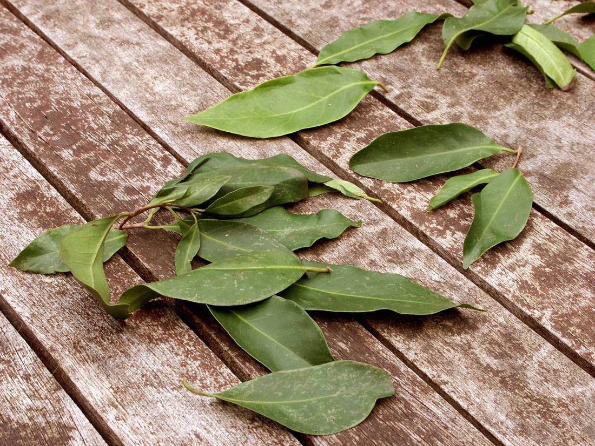
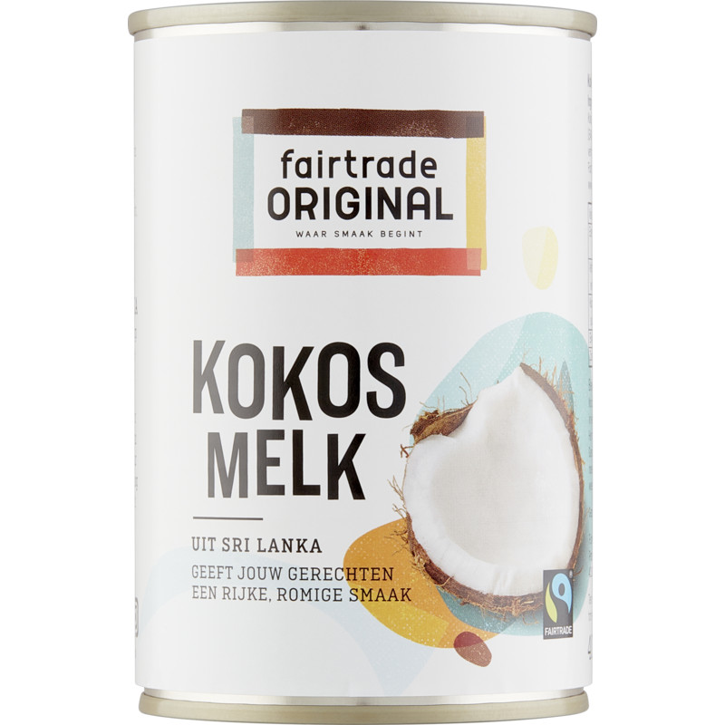
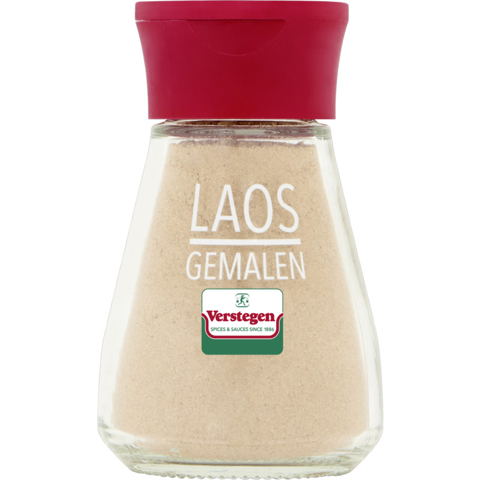
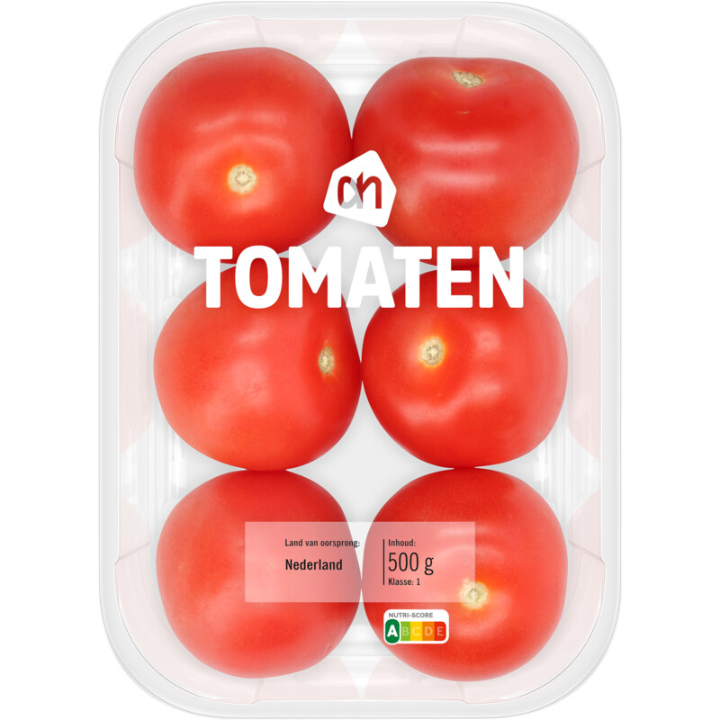
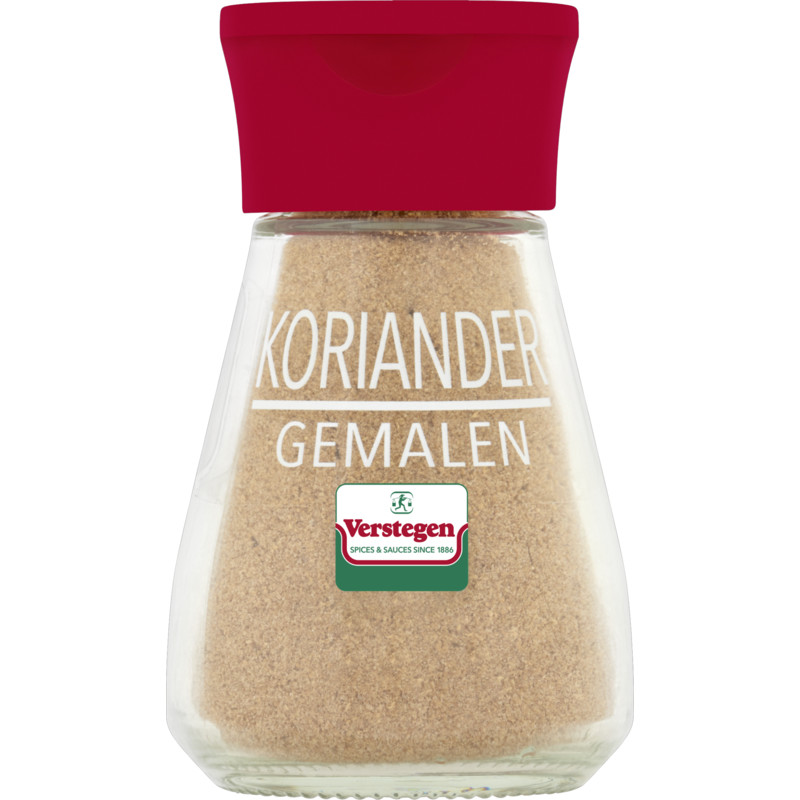

Recept Soto Betawi
Waarschijnlijk ken je onze soto ajam (kip) al, maar vandaag een variant die net even anders is: soto betawi. Deze soto is ook een echte maaltijdsoep, maar dan met gebakken of gefrituurd rundvlees. Heerlijk! Het doet je misschien een beetje denken aan de Thaise tom kha kai door de kokosmelk die we gebruiken. Doordat het vlees eerst lang gaar suddert en vervolgens heel kort gefrituurd wordt doet het ook wel denken aan dendeng blado (krokant Indisch rundvlees), wat we onlangs nog maakten. Uiteraard serveren we het met witte rijst, gebakken uitjes, lente-ui en natuurlijk emping. Voeg naar smaak sambal toe. Mmmm!
Ingredientenlijst
| Ingredient |
Foto ingredient |
Kruiden |
Kruiden foto |
| Runderlappen 800gram |
 |
5 Kimirinoten |
 |
| Aardappels 400gram |
 |
3 Salambladen |
 |
| Kokosmelk 400ml |
 |
1 theelepel Laos |
 |
| 2 tomaten |
 |
1 theelepel Laos |
 |